Tudo sobre o sistema de equipamentos: como as peças funcionam, como melhorar e onde guardar. Os números abaixo são os do jogo na V8 e podem mudar durante o beta.
Seu herói tem 10 lugares para vestir peças. Cada peça tem um espaço, um grau (a raridade) e um nível. Quanto maior o grau e o nível, mais forte ela é.
São 10 lugares: Arma primária, Capacete, Armadura, Luvas, Anel, Arma secundária, Colar, Cinto, Botas e um segundo Anel. Eles abrem aos poucos, conforme a fase que você alcançou.
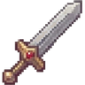
Arma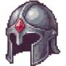
Capacete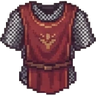
Armadura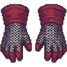
Luvas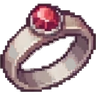
Anel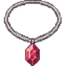
Colar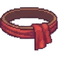
Cinto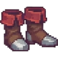
Botas| Espaço | Abre na fase |
|---|---|
| Arma, Capacete, Armadura, Botas | 1 |
| Arma secundária | 5 |
| Luvas | 12 |
| Cinto | 16 |
| Colar | 27 |
| Anel | 33 |
| Segundo Anel | 37 |
Só o próximo espaço aparece na tela, com um cadeado e a fase. Ao abrir um espaço novo, você ganha uma peça Rara para ele.
Existem 7 graus. A cor do quadro da peça mostra o grau. Quanto mais raro, mais forte a base da peça e mais encaixes de material ela tem.
| Grau | Força da base* | Encaixes Tipo 1 | Tipo 2 | Tipo 3 |
|---|---|---|---|---|
| Comum branco | 1,0 | 0 | 0 | 0 |
| Incomum verde | 1,4 | 0 | 0 | 0 |
| Raro azul | 1,9 | 1 | 0 | 0 |
| Épico roxo | 2,9 | 2 | 0 | 0 |
| Lendário laranja | 4,7 | 3 | 1 | 0 |
| Imortal vermelho | 7,4 | 3 | 2 | 0 |
| Místico aurora | 10,9 | 3 | 2 | 1 |
*Multiplica Ataque, Vida e Defesa. Os status em porcentagem usam outra escada: 1,0 · 1,27 · 1,6 · 2,0 · 2,53 · 3,2 · 4,0.
O Místico é o grau máximo. O quadro dele tem o fundo colorido como uma aurora. Só ele aceita o material Tipo 3.
Para quem não distingue bem as cores, a moldura também muda: cantinhos, cantoneiras e losangos aparecem conforme o grau sobe.
Cada espaço dá sempre os mesmos tipos de status. Não existem mais status sorteados nem Reforja: a diferença entre duas peças do mesmo espaço é o grau, o nível, o refino e os materiais encaixados.
| Espaço | O que dá |
|---|---|
| Arma | Ataque, Ataque % e Velocidade de ataque (a velocidade só aumenta do Épico para cima) |
| Capacete | Defesa |
| Armadura | Defesa e Vida |
| Luvas | Ataque e Velocidade de ataque % |
| Botas | Velocidade de movimento % e Esquiva % |
| Cinto | Redução de dano % |
| Colar | Chance de crítico % e Redução de recarga % |
| Anéis | Dano crítico % e Ataque % |
| Arma secundária | Defesa e Vida (provisório) |
O Espadão soma a base da espada mais a da segunda espada.
O nível da peça sobe de 1 em 1 e define o que o herói precisa para vestir (70% do nível da peça). Mas a força e o ícone andam em 11 degraus: 1, 5, 10, 15, 20, 30, 40, 50, 65, 80 e 100.
Exemplo com a espada. Cada degrau tem um desenho próprio:
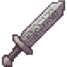
Nv 5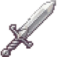
Nv 10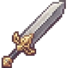
Nv 15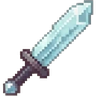
Nv 20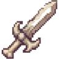
Nv 30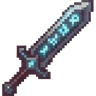
Nv 40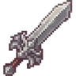
Nv 50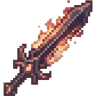
Nv 65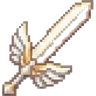
Nv 80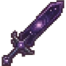
Nv 100Os outros espaços seguem a mesma ideia. Capacete, do nível 1 ao 100:
Uma peça de nível 29 tem a força e o ícone do degrau 20. Ao chegar no 30, ela pula para o degrau seguinte.
Nas dificuldades Difícil, Pesadelo e Inferno, toda peça cai já no nível máximo (100). Na Normal, o nível acompanha a fase.
Tudo que os monstros soltam vem dentro de baús. Eles voam até o contador Baús, na coluna da direita da tela de luta, e ficam guardados fechados. O conteúdo já é sorteado quando o baú cai.
| Baú | Vem de | Guarda até | Abre sozinho (grátis) | Com Cofre Rúnico | |
|---|---|---|---|---|---|
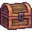 | Monstro | monstros comuns e elites | 20 | a cada 2 min | a cada 20 s |
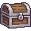 | Chefe | chefe de fase, guardião e chefe de região | 15 | a cada 3 min | a cada 45 s |
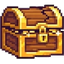 | Vórax | o Vórax | 10 | a cada 3 min | a cada 45 s |
O jogo nunca equipa sozinho. Você escolhe de três jeitos:
Para cada grau você escolhe uma regra: Vender (a peça vira Ouro assim que abre o baú) ou Guardar (vai para a Bolsa de peças). Comum e Incomum começam em Guardar. A regra vale para o que cai depois de salva. Para o que já estava na bolsa, use o botão Vender N agora.
Peça trancada não é vendida, fundida nem usada por engano. Use para suas peças favoritas.
Ela abre na fase 24. Para entrar, vá ao Acampamento (atalho Acampar) e toque no ferreiro, ao lado da bigorna. Ao fechar, você volta ao Acampamento.
A Forja tem nível, de 1 a 25. Cada ação dá XP e o nível libera ações novas. Um aviso mostra o que abriu.
| Ação | Abre no nível |
|---|---|
| Fundir e Derreter | 1 |
| Refinar | 1 |
| Forjar | 5 |
| Encaixar material Tipo 1 | 8 |
| Tirar material | 10 |
| Encaixar material Tipo 2 | 15 |
| Encaixar material Tipo 3 (só peça Místico) | 25 |
É grátis. Junte 9 peças do mesmo grau (da Bolsa, nem vestidas nem trancadas) ou 9 materiais iguais em grau (Tipo 1 ou 2). Eles viram 1 de grau igual ou acima, pelas chances abaixo. A tela mostra "tem N de 9" e pede confirmação.
| Você funde 9 | Chance do resultado |
|---|---|
| Comum | 95% Incomum · 5% Raro |
| Incomum | 96% Raro · 4% Épico |
| Raro | 97,5% Épico · 2,5% Lendário |
| Épico | 99% Lendário · 1% Imortal |
| Lendário | 80% Imortal · 20% Lendário |
| Imortal | 1% Místico · 99% Imortal |
As mesmas chances valem para peças e materiais. A peça sai num espaço sorteado e no maior nível das 9. O material Tipo 3 não se funde.
Disponível no nível 5 da Forja. Escolha o espaço e o grau do material. Gasta 3 materiais Tipo 1 do mesmo grau (de qualquer família) mais um pouco de Ouro. A barra "Chances" mostra o que pode sair. O Forjar nunca dá Místico.
| 3 materiais | Incomum | Raro | Épico | Lendário | Imortal |
|---|---|---|---|---|---|
| Comum | 50% | 40% | 8% | 2% | – |
| Incomum | 30% | 52% | 13% | 4,5% | 0,5% |
| Raro | 18% | 56% | 18% | 7% | 1% |
| Épico | 3% | 52% | 27% | 15% | 3% |
| Lendário | – | 49% | 30% | 17% | 4% |
| Imortal | – | 45% | 30% | 20% | 5% |
Também há o lote: forja 10 peças de uma vez, gastando 3 materiais por peça, com confirmação. A peça sai no maior nível que o seu herói já pode vestir.
Escolha uma peça (vestida ou da Bolsa). A tela mostra os encaixes dela por tipo, o status e o valor de agora. Toque num material: o jogo mostra o custo (1 material + Ouro) e os status possíveis, e pergunta antes de gastar. Quanto maior o nível da peça, mais forte o material: vale 30% da faixa no nível 1 e 100% no nível 100.
Para tirar um material, toque no encaixe cheio (a partir do nível 10 da Forja). É grátis, mas o material some.
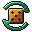
RefinarContinua como antes: sobe o +X da peça com Cristais da mina. Agora o +X fica no encaixe do corpo (Arma, Capacete, cada Anel...). A peça nova que você veste ali herda o refino, e a peça que sai volta a +0. Só as peças vestidas aparecem para refinar.
Vende peças em troca de Ouro e dá XP à Forja.
São 65 materiais de monstro, em 3 tipos. Eles só caem nos baús da Aventura, depois que a Forja abre (fase 24). Material não é prêmio de loja nem de missão. Cada pilha guarda até 10.
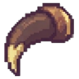
Garra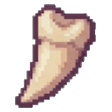
Dente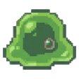
Gosma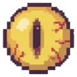
Olho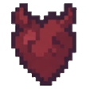
CoraçãoÍcones provisórios.
| Tipo | Quantos | Como funciona |
|---|---|---|
| Tipo 1 | 36 | 1 status por tipo de peça (arma, armadura ou acessório). Existe do Comum ao Místico. |
| Tipo 2 | 18 | Do Épico ao Místico. Ao encaixar, sai 1 de 2 status possíveis. |
| Tipo 3 | 11 | Só Místico. Um efeito especial certo que só existe nele e vale em qualquer peça. |
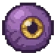
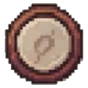
Materiais também dão Esquiva (o golpe não acerta) e Bloqueio (o golpe perde metade). Cada um tem teto de 75%.
O grau do material depende da dificuldade da Aventura:
| Dificuldade | Graus que caem |
|---|---|
| Normal | Comum a Raro |
| Difícil | Incomum a Épico |
| Pesadelo | Raro a Lendário |
| Inferno | Épico a Imortal |
O jogo tem três lugares para guardar coisas.
Guarda as peças de equipamento. Começa com 100 espaços. Dá para ampliar de 10 em 10 por 200 Éter , com confirmação (até 20 compras).
Guarda consumíveis, materiais, baús e chaves. Começa com 60 espaços e cada pilha ocupa 1 espaço. Dá para ampliar 10 espaços por 200 Éter, até o máximo de 160. Aparece como "N / 60 espaços".
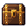
ArmazémUm depósito extra, no menu de atalhos. Tem 4 abas de 50 espaços.
| Aba | Como abre |
|---|---|
| 1 | Já vem aberta |
| 2 | Ao vencer o Vórax |
| 3 | 500 Éter |
| 4 | 500 Éter |